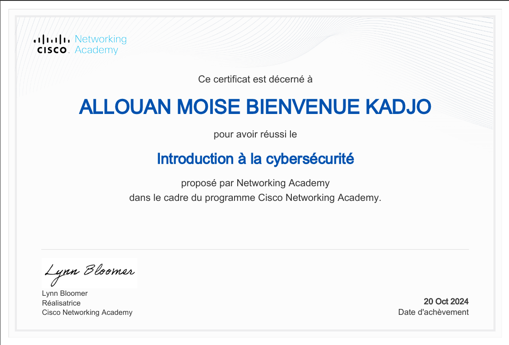
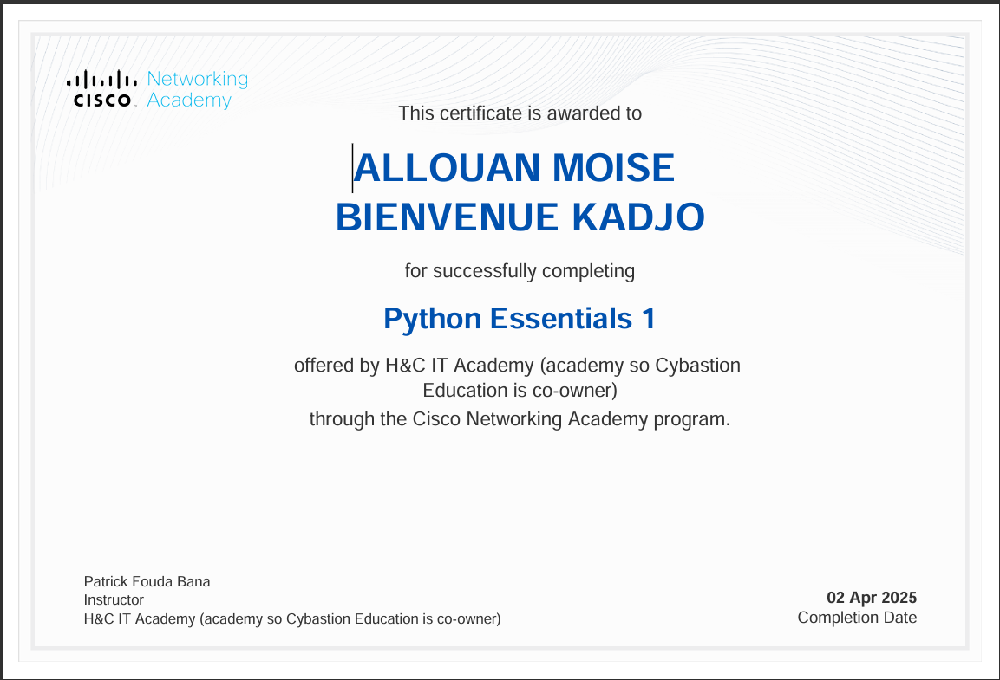
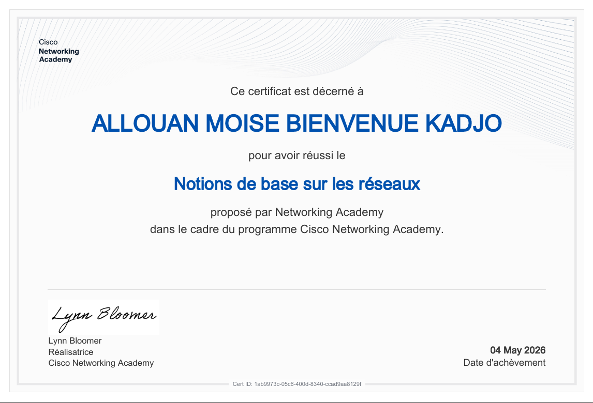
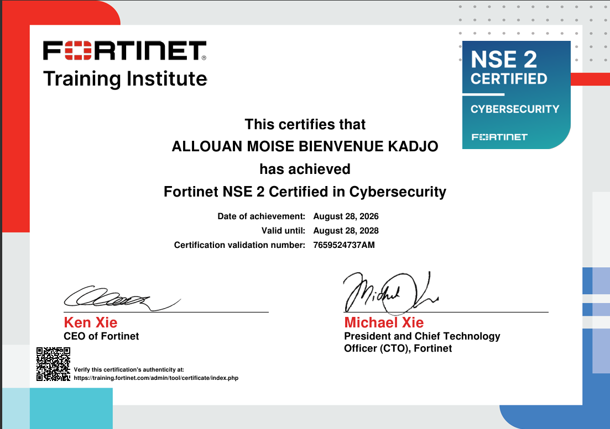
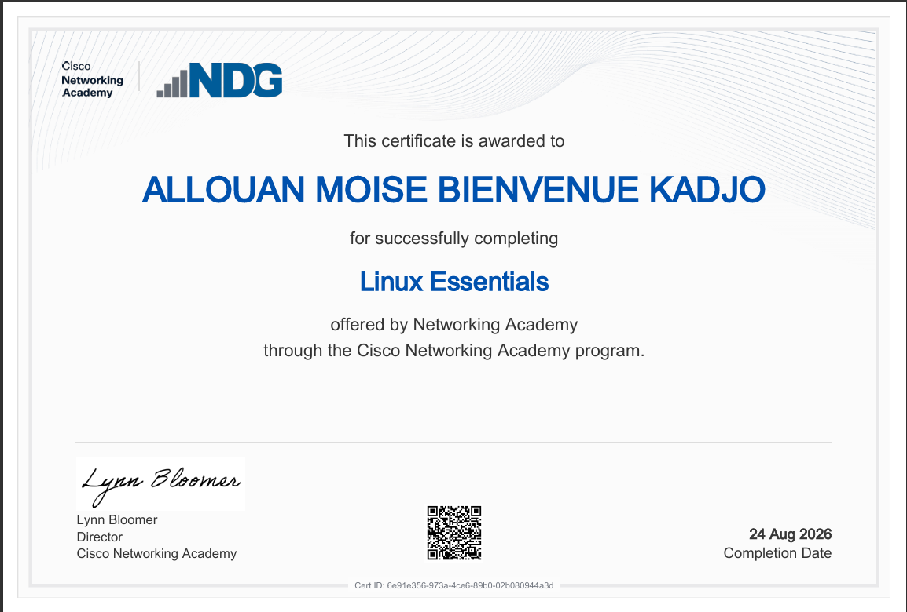

Architecture Load Balancing
Déploiement de trois serveurs Web avec répartition de charge, haute disponibilité et tolérance aux pannes.
LinuxApache/NginxRéseaux
Étudiant en Master 2 Réseaux, Systèmes et Télécommunications (RIST) à l'Université Félix Houphouët-Boigny (UFHB), mon ambition est de contribuer à la création d'infrastructures informatiques plus sûres, plus fiables et mieux protégées face aux menaces numériques.
Mon projet VulnScan s'inscrit pleinement dans cette ambition. Il s'agit d'un outil open source de scan et d'analyse de vulnérabilités en ligne de commande, développé pour les systèmes Linux. Il vise à automatiser différentes étapes d'une analyse de sécurité afin d'identifier les hôtes, services et vulnérabilités potentiellement exposés, puis à faciliter l'interprétation des résultats.
Mon objectif est d'évoluer vers un profil spécialisé en cybersécurité, en sécurité des réseaux et en protection des infrastructures IT. À travers mes projets, mes certifications et ma veille technologique, je souhaite transformer mes connaissances en solutions concrètes et contribuer à des projets utiles, robustes et sécurisés.
Master 2 RIST — UFHB Abidjan (En cours)
Licence Informatique — UFHB Abidjan (2024-2025)
Baccalauréat C — Lycée Municipal de Bonoua (2021-2022)
Abidjan, Côte d'Ivoire





Déploiement de trois serveurs Web avec répartition de charge, haute disponibilité et tolérance aux pannes.
Installation de serveurs Linux, gestion des utilisateurs, configuration des permissions et des services réseau.
Déploiement d'un environnement complet sous VirtualBox : DHCP, DNS, interconnexion de plusieurs machines et administration système.
Automatisation de différentes étapes d'une analyse de sécurité pour identifier les hôtes, services et vulnérabilités potentiellement exposés.